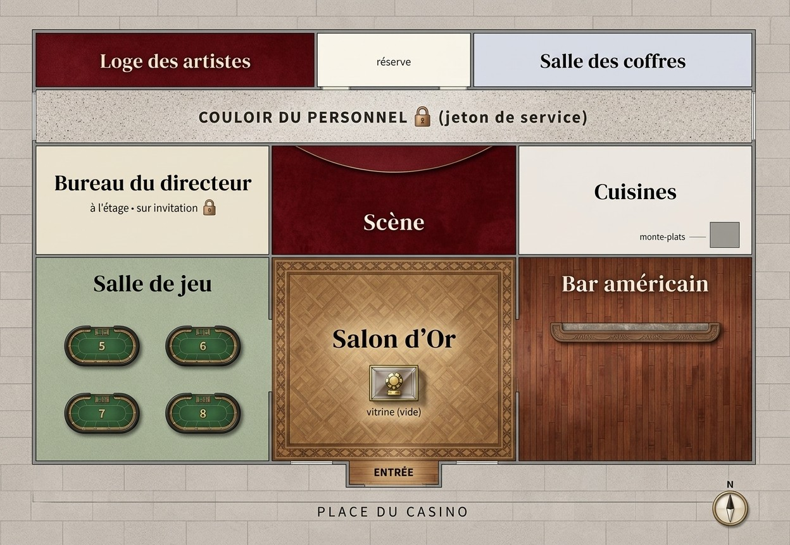

Monte-Carlo 1928
Le Casse
du Siècle
Un diamant de 42 carats dort dans le coffre du casino.
Vous avez jusqu'à minuit pour l'en sortir.
2 à 6joueurs
60 minune heure
★★★intermédiaire
Un diamant de 42 carats dort dans le coffre du casino.
Vous avez jusqu'à minuit pour l'en sortir.
Cette fois, c'est vous les voleurs. Bluff, discrétion et déduction : tout ce qu'il faut savoir est ici.
| I · Le contrat | La lettre de Rose, votre mission | 3 |
| II · Le beau monde | Six personnes à approcher | 5 |
| III · Votre bande | Six talents, six secrets | 7 |
| IV · Le casino | Le plan et le Soupçon | 9 |
| V · Le pupitre du casino | Comment jouer | 11 |
| VI · Le carnet de la bande | À remplir au crayon | 13 |
On ne montre pas la marchandise. Ni les documents secrets, ni ce que l'on entend au casque. On se le raconte, à voix basse si possible.
Samedi 18 août 1928, 23 h. Un chasseur vous a remis un billet parfumé à la rose.
Hôtel de Paris, ce soir
Mes chéris,
Ce soir, au Casino de la Riviera, ce vieux paon de baron de Valcourt exhibe son Œil du Nil. Quarante-deux carats de rose. Depuis 22 h 45, la pierre dort dans le coffre du casino, et à minuit, ce nigaud de directeur l'ouvrira pour son contrôle.
Vous avez une heure. Vous entrez, vous ouvrez le coffre, vous ressortez avec la pierre. Sans bruit, sans scandale, avec le sourire.
Je vous ai fait faire de beaux habits et de beaux papiers : faites-leur honneur. Fernand veille sur vous. Écoutez-le, il en a vu d'autres.
Rose
P.-S. : brûlez ce billet. Et ne faites confiance à personne. Pas même aux artistes.
Trois cartes pour signer le coup du siècle.
Un coup faux coûte 5 minutes et fait monter le Soupçon.
Glissez la carte d'un personnage dans la fente pour l'approcher. Posez un objet sur le plateau pour le lui montrer.
Il donne le gala, et surtout, il adore qu'on l'admire.
« Il a orné le turban d'un pharaon, rien que ça. »
« La Panthère » du music-hall, arrivée de Nice la semaine dernière.
« Pour vous servir, mon chou. »
Fier de son coffre « imprenable », il raffole des comtes russes.
« Ponctuel comme une horloge suisse. »
Certains vous poseront des questions. Répondez avec les boutons de couleur ou la molette, comme le ferait le comte que vous prétendez être. Une maladresse, et le Soupçon monte.
Croupier depuis vingt ans. Il voit tout, il entend tout.
« Faites vos jeux. »
Il garde l'entrée du Salon d'Or et ne sourit jamais.
« Circulez. »
Elle collectionne les pierres… et les mots d'esprit.
« J'ai l'œil, ma chère. »
Vieux monte-en-l'air à la retraite, il connaît tous les coffres de la Côte. Quand vous coincez, glissez sa carte dans la fente : les trois premiers conseils sont gratuits, les suivants coûtent 2 minutes.
Chacun de vous a un talent, et un document secret. Les six rôles sont toujours tous en jeu.
| Joueurs | 2 | 3 | 4 | 5 | 6 |
|---|---|---|---|---|---|
| Rôles par joueur | 3 chacun | 2 chacun | 2·2·1·1 | 2·1·1·1·1 | 1 chacun |
Utiliser un pouvoir : glissez la carte visée dans la fente, puis posez votre carte Rôle sur le plateau. Le pupitre décompte les utilisations.
Le plan du coup.
Plan B : juste après une hausse du Soupçon, glissez votre carte pour l'annuler.
La notice du coffre.
Stéthoscope : au coffre, mettez le casque et écoutez les disques tourner.
Votre carton d'invitation, et l'œil pour le vrai et le faux.
Expertiser : votre carte et un objet, l'un dans la fente, l'autre sur le plateau : vrai ou faux ? Faux papiers (1 fois) : entrer là où il faut un laissez-passer.
Les passages secrets du casino.
Monte-plats : glissez votre carte pour éviter une épreuve de discrétion.
Vous savez ce que chacun a dans les poches.
Faire les poches : un personnage dans la fente, votre carte sur le plateau. Le Soupçon monte à chaque fois.
Votre fausse identité de comte russe.
Belle parole : glissez votre carte, le Soupçon baisse de 3.
Glissez la carte d'un lieu dans la fente pour vous y rendre. Vous y restez jusqu'au lieu suivant.

Le rez-de-chaussée, et l'étage du personnel.
L'anneau lumineux mesure la méfiance du personnel. Éteint au départ, il se remplit d'or puis de rouge. Tout rouge, vous êtes démasqués.
Il vous dira toujours quand vous servir de quoi. Voici ce que vous trouverez sur la façade.
Rien n'est jamais tout à fait ce qu'il paraît, ce soir. Regardez les détails des photos et des objets, et demandez au Faussaire ce qu'il en pense.
À remplir au crayon pendant la partie. Celui-là, vous pouvez le montrer !
| Personne | Ce qu'il sait, ce qu'il cache | Dans ses poches |
|---|---|---|
| Baron de Valcourt | ||
| Joséphine Lamour | ||
| Ernest Pujol | ||
| Albert Rinaldi | ||
| Sergent Mattei | ||
| Lady Pembroke |
| Heure | Ce qui s'est passé |
|---|---|
| 22 h 30 | |
| 22 h 45 | |
| 23 h | |
| 23 h 15 | |
| 23 h 30 | |
| 23 h 45 | |
| Minuit |
Missions · Mystères · Évasion
Monte-Carlo, 1928. Ce soir, l'Œil du Nil dort dans le coffre du Casino de la Riviera. Bluffez le beau monde, faites les poches, déjouez les rondes, ouvrez le coffre… et repartez avec la pierre avant minuit.
| La Disparition d'Éclipse | Le Haras des Trois Fers | ★ |
| Le Casse du Siècle | Monte-Carlo 1928 | ★★ |
| La dernière nuit de Lord Edgar | Le Manoir Blackwood | ★★ |
| Désamorçage | Brigade de déminage | ★★ |
| Signal Perdu | Station Kepler-9 | ★★★ |
| Dernier souffle | Sous-marin Narval | ★★★ |
| Banc d'essai | L'Atelier du professeur Lumen | ★ |